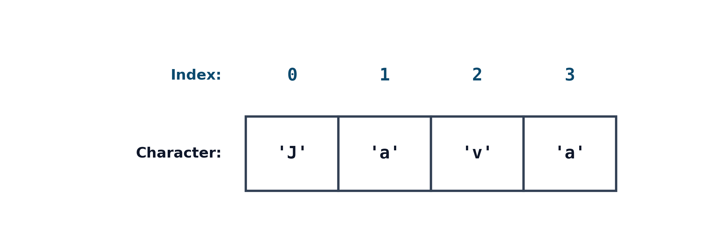
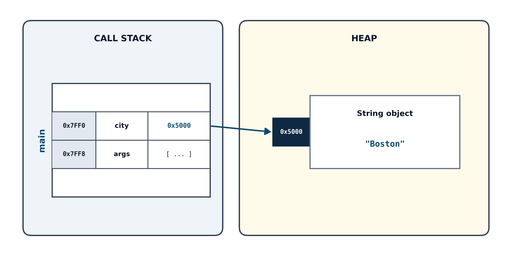
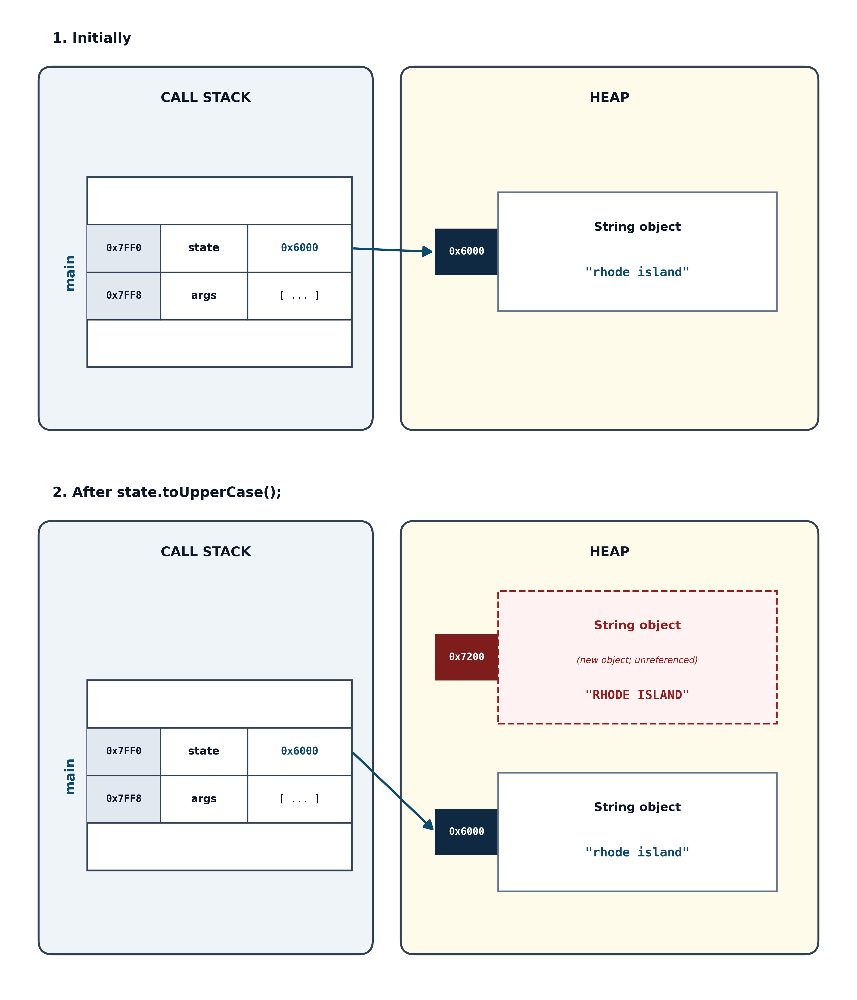
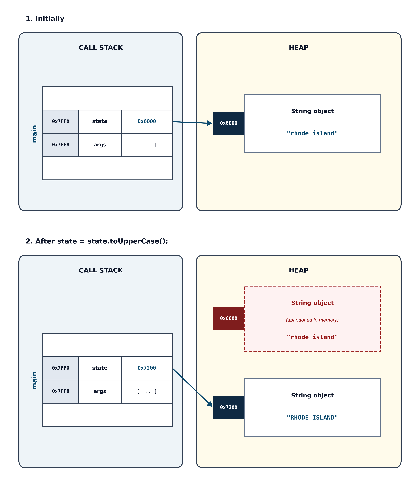

Section 2.6 Manipulating Text: Working with Strings
So far, we have worked primarily with numbers. But almost every real-world application—from updating menu items to processing user input or reading a file—requires manipulating text. In Java, text is represented using the
String type.
While working with strings feels very natural, strings introduce one of the most fundamental concepts in Java: the difference between a primitive type and an object.
Subsection 2.6.1 What is a String?
A
String is an ordered, indexed sequence of characters. A String literal is enclosed in double quotation marks:
String greeting = "Hello, World!";
Notice that while a character literal (
char) is enclosed in single quotes ('A'), a string literal is always enclosed in double quotes ("A"). A string literal can even be composed of just one character or no characters at all ("", known as the empty string).
Every character in a string occupies a specific numerical position called its index. Like many programming languages, Java uses zero-based indexing: the first character is always at index 0, the second is at index 1, and so on.
Consider the string
"Java":

Diagram illustrating 0-based string indexing for “Java”. A row of four contiguous white rectangular cells contains the stored characters
'J', 'a', 'v', and 'a'. Positioned directly above each box, without enclosing cells, are their 0-based position indices: 0 above 'J', 1 above 'a', 2 above 'v', and 3 above 'a'.
The letter J is at index 0, there is a letter a at index 1, v at index 2, and another a at index 3. If we need to access individual characters of a string, we must do so through their indices. Because counting begins at 0, the index of the final character is always one less than the total number of characters in the string. For a string with four characters, the last valid index is 3.
Because double quotes are used to mark the beginning and end of a string literal, what happens if you want to include an actual double quote inside your text, as in this example?
// This causes a compiler error!
String quote = "She said, "Hello!" to everyone.";
The Java compiler sees the second quote as the end of the string
"She said, ", and becomes confused by the word Hello!, which, to Java, falls outside of the string literal.
To include special characters inside a string literal, Java provides escape sequences. An escape sequence is a backslash (
\) followed by a character. The backslash tells the compiler to treat the next character inside the string literal as special. Escaping a character is a way to either take the syntactical meaning away from a character or give a syntactical meaning to a character. For example, a quote or backslash has special syntactical meaning within (or at the end of) a string. Escaping a quote or backslash takes away the syntactical meaning so we can include the literal character in the string. Some ordinary characters, like n and t, have a special meaning when escaped. Some common escape sequences are shown in Table 2.12.
| Escape sequence | Name | What it represents |
|---|---|---|
\" |
Double quote | Inserts a literal " character |
\' |
Single quote | Inserts a literal ' character |
\\ |
Backslash | Inserts a literal \ character |
\n |
Newline | Moves output to the beginning of the next line |
\t |
Tab | Inserts a horizontal tab space |
Here is an example block of code with some escape sequences embedded in string literals:
String quote = "She said, \"Hello!\" to everyone.";
String path = "C:\\Users\\Alice\\Documents";
String menu = "1.\tCoffee\n2.\tTea";
System.out.println(quote);
System.out.println(path);
System.out.println(menu);
This produces the following output:
She said, "Hello!" to everyone. C:\Users\Alice\Documents 1. Coffee 2. Tea
You can see that a double-quote within the string
quote is literally inserted into the string if it’s first escaped with a backslash. (And to include a literal backslash in a string, as with the path variable, each backslash must be escaped with a backslash.) Notice that the tab and newline in the menu string are not surrounded by any space within the literal string, and they add white space (horizontal and vertical, respectively) to the string, which you can see when it’s displayed to the console. Practice with escape sequences in JShell to test your understanding and confirm the results.
Subsection 2.6.2 Primitives vs. Objects: The Memory Picture
In Section 2.4, we explored Java’s eight primitive types (
int, double, boolean, char, etc.). String is not a primitive type. Notice that String begins with a capital S, which we know signals a class name. The primitive type names all begin with a lowercase letter.
A
String is an object, and the variables we declare to hold them are called reference variables.
To understand the difference between primitives and objects, let’s briefly review how Java organizes computer memory:
-
The Stack.
When you declare a variable inside a method, that variable lives on the stack. For a primitive variable, the stack holds the actual raw value. For example,
int age = 21;stores the binary representation of 21 directly inside the variableage. -
The Heap.
The heap is a large pool of shared memory where Java stores objects. Objects are typically larger and more complex than simple primitives.
When you declare a
String variable:
String city = "Boston";
The actual text data (
"Boston") lives in the heap. The variable city on the stack does not contain the letters ’B’, ’o’, ’s’, ’t’, ’o’, ’n’. Instead, it stores a reference—the memory address that points to where the "Boston" object lives in the heap. This is illustrated in Figure 2.13.

Memory diagram showing the stack and heap layout for
String city = "Boston";. Inside the stack frame for main on the call stack, the local variable city at memory address 0x7FF0 stores a reference address (0x5000). A direct pointer arrow leads from this address cell to the address tag on a String object located on the heap, which stores the string value “Boston”.
Because objects bundle together both data and behavior, Java provides methods specifically designed to work with an object’s data. These methods constitute the operations that you can use to operate on an object of a specific type. To access an object’s methods, we use dot notation:
objectReference.methodName()
The dot operator (
.) tells Java to follow the reference from the stack variable to the object in the heap and run the method following the dot on that object.
Subsection 2.6.3 Java’s VIP Treatment: Syntactic Sugar for Strings
Variables of type
String have a built-in feel in Java, despite that they are objects. We can have a literal of type String and we can create a String without using the new keyword. We can concatenate two String objects together with the + operator. This special language support is often called syntactic sugar. This support was built into Java to make strings as effortless to use as a primitive. Let’s take a quick tour of the special syntactic support for strings.
Subsubsection 2.6.3.1 String Literals
You can create a
String simply by typing text inside double quotes. You do not need to write new String("Java Basics") (although you can):
String title = "Java Basics"; // No new keyword required
Behind the scenes, the Java compiler automatically constructs a
String object in the heap for you. For almost all other classes in Java, creating an object requires using the new keyword:
Scanner input = new Scanner(System.in);
Subsubsection 2.6.3.2 The Concatenation Operator (+)
Java generally does not allow operators (like
+, -, or *) to be used on objects. The one major exception is the plus sign (+) when used with strings, where it performs string concatenation (joining two strings end-to-end):
String firstName = "Ada";
String lastName = "Lovelace";
String fullName = firstName + " " + lastName;
System.out.println(fullName); // Prints: Ada Lovelace
You can also use the compound assignment operator
+= to append text:
String message = "Loading";
message += "...";
System.out.println(message); // Prints: Loading...
Subsubsection 2.6.3.3 Mixed-Type Concatenation
If either operand to the
+ operator is a String, Java automatically converts the other operand into its string representation and concatenates them:
int score = 95;
String report = "Final score: " + score; // "Final score: 95"
Be mindful of operator precedence when combining arithmetic with string concatenation. Because
+ evaluates from left to right:
System.out.println("Total: " + 5 + 3); // Prints: Total: 53
System.out.println("Total: " + (5 + 3)); // Prints: Total: 8
In the first line,
"Total: " + 5 evaluates to the string "Total: 5", and then "Total: 5" + 3 produces "Total: 53". In the second line, the parentheses force the integer addition 5 + 3 to evaluate first.
Subsection 2.6.4 String Methods
Methods are the operations that you can perform on an object of a specific type. The
String class provides dozens of built-in methods. Here are five essential methods that you will use frequently:
| Method | Return type | Description |
|---|---|---|
length() |
int |
Returns the total number of characters in the String. |
charAt(int index) |
char |
Returns the character at the specified index. |
substring(int start, int end) |
String |
Extracts and returns a slice of the String from start up to (but not including) end. |
toUpperCase() |
String |
Returns a copy of the String in all uppercase letters. |
toLowerCase() |
String |
Returns a copy of the String in all lowercase letters. |
Let’s look at each of these in action:
Subsubsection 2.6.4.1 Finding Length with length()
The
length() method counts every character in the string, including spaces, punctuation, and escape characters:
String phrase = "Java rocks!";
int count = phrase.length();
System.out.println(count); // Prints: 11
Notice the parentheses on
phrase.length(). In Java, finding the length of a string requires calling a method. We always put parentheses at the end of a method call, even if there are no arguments to include in the parentheses.
Subsubsection 2.6.4.2 Accessing Individual Characters with charAt(index)
To retrieve a single character from a specific position, pass its index to
charAt():
String language = "Java";
char firstLetter = language.charAt(0); // 'J'
char lastLetter = language.charAt(language.length() - 1); // 'a' at index 3
If you provide an index that is negative, or an index greater than or equal to
length(), Java halts and throws a StringIndexOutOfBoundsException. For "Java" (length 4), asking for language.charAt(4) causes an error because valid indices are only 0, 1, 2, 3.
Subsubsection 2.6.4.3 Extracting Slices with substring()
The
substring() method extracts a smaller piece of text from an existing string, returning a new String. It takes two integer parameters:
-
beginIndex.The index where the slice starts (inclusive). -
endIndex.The index where the slice stops (exclusive—it stops just before this index).
String greeting = "Hello, World!";
String word1 = greeting.substring(0, 5); // Indices 0 through 4 -> "Hello"
String word2 = greeting.substring(7, 12); // Indices 7 through 11 -> "World"
Why does
endIndex stop one character early? This design has two convenient mathematical properties:
-
The length of the extracted substring is always
endIndex - beginIndex(\(5 - 0 = 5\) characters). -
Slices can be glued back together naturally:
greeting.substring(0, 5) + greeting.substring(5, 12).
Java also provides an overloaded version with just one argument:
substring(beginIndex). It extracts everything from beginIndex all the way to the end of the string:
String rest = greeting.substring(7); // "World!"
Subsubsection 2.6.4.4 Changing Case: toUpperCase and toLowerCase
When working with text, you often need to standardize how words are capitalized—for instance, ensuring that a user’s response of
"yes", "Yes", or "YES" can all be processed the same way. The String class provides two methods for converting the case of your text, toUpperCase() and toLowerCase().
Here is a basic example:
String title = "Java Programming 101!";
String shouting = title.toUpperCase(); // "JAVA PROGRAMMING 101!"
String whisper = title.toLowerCase(); // "java programming 101!"
A common question is: what counts as uppercase or lowercase?
-
Alphabetic characters change.
Standard English letters (a–z and A–Z), as well as cased letters in other alphabets supported by Unicode (such as
'é'\(\to\)'É'or'ñ'\(\to\)'Ñ'), are converted to their corresponding opposite case. -
Non-letter characters are untouched.
Characters that have no concept of case—such as digits (0–9), punctuation (
!,?,,), symbols ($,@,#), and whitespace (spaces, tabs, newlines)—remain completely unchanged. -
Languages without case.
Characters in writing systems that do not use uppercase and lowercase (such as Chinese, Japanese, or Arabic) are simply copied over as-is.
Notice in the example above that the space, the digit characters 101, and the exclamation point ! were unaffected. Only the alphabetic characters were converted.
The most critical detail to remember about
toUpperCase() and toLowerCase() is that they do not change the value of the original String. Calling title.toUpperCase() does not alter the text stored inside the title object. It cannot—strings in Java are permanently fixed once created in memory. (More on that in the next section.) Instead, the method inspects the characters of title, builds a brand-new String object in the heap containing the uppercase text, and returns a reference to that new object.
A classic semantic error is calling the method and forgetting to capture the result:
String state = "rhode island";
// This creates an uppercase string in memory, but immediately throws it away!
state.toUpperCase();
System.out.println(state); // Still prints: rhode island
Because
state.toUpperCase() leaves the original state variable completely untouched, the uppercase string was created in the heap and then instantly abandoned.
If you want your variable to reflect the change, you must reassign the variable so it points to the newly returned object:
String state = "rhode island";
// Reassign 'state' to point to the newly created uppercase string
state = state.toUpperCase();
System.out.println(state); // Prints: RHODE ISLAND
Standardizing case is particularly helpful when preparing input for comparisons or searching. If you prompt a user:
System.out.print("Do you wish to continue? (Y/N): ");
String response = keyboard.nextLine();
// Standardize the response so 'y' and 'Y' both become "Y"
response = response.toUpperCase();
By converting the response to uppercase immediately, your program only needs to check for
"Y", without worrying about whether the user typed lowercase ’y’ or uppercase ’Y’.
Subsection 2.6.5 Immutability: Strings Never Change
There is one critical property of Java strings that trips up almost every beginner: Strings are immutable.
An object is immutable if its internal data cannot be modified after it is created.
When you call a method like
toUpperCase() or substring(), you might expect it to alter the existing string in place. But it does not, as we saw in the last section:
String state = "rhode island";
state.toUpperCase();
System.out.println(state); // Still prints: rhode island
Because strings cannot be modified in the heap,
toUpperCase() does not touch the original "rhode island" object. Instead, it manufactures a brand-new String object containing "RHODE ISLAND" in the heap and returns a reference to that new object. In the code above, because we did not capture that returned reference, the new object was simply ignored and discarded! Here is what this operation looks like in memory:

Two-panel memory diagram illustrating string immutability. Panel 1 (Initially) shows the local variable
state on the stack pointing to a heap String object containing “rhode island”. Panel 2 (After state.toUpperCase();) shows that state remains pointing to the original untouched “rhode island” object, while a brand-new String object containing “RHODE ISLAND” sits unreferenced and abandoned on the heap.
A new
"RHODE ISLAND" object is created in the heap, but because it isn’t assigned to a reference variable on the stack, it is immediately abandoned. The original "rhode island" object was never altered, and the state variable continues pointing directly to it.
If you want
state to reflect the change, you must assign the returned reference back to a variable:
String state = "rhode island";
state = state.toUpperCase();
System.out.println(state); // Prints: RHODE ISLAND
Here is what the updated code looks like in memory:

Two-panel memory diagram illustrating string reassignment. Panel 1 (Initially) shows the local variable
state at address 0x7FF0 on the stack holding reference 0x6000 and pointing to the heap String object containing “rhode island”. Panel 2 (After state = state.toUpperCase();) shows that state has been updated on the stack to hold reference 0x7200, pointing to the new uppercase String object containing “RHODE ISLAND”, while the original “rhode island” object at 0x6000 sits abandoned with a dashed red border and no referencing variables.
A new
"RHODE ISLAND" object is created in the heap, and the state variable has its reference updated to point to that new object. The original "rhode island" object was never modified; it simply no longer has any variables pointing to it. Java will eventually reclaim that abandoned memory through an automatic process called garbage collection.
This behavior is true for every method in the
String class. Methods that seem to modify a string always return a new, distinct String object.
One thing that learners sometimes find confusing about immutability is the distinction between the variable and the object:
-
The object in the heap cannot be changed.
-
The variable (reference) on the stack can be changed.
The variable
state is like an arrow. You can point that arrow at a different object in the heap anytime you like, but the text inside the String object itself can never be edited.
![Runestone Academy logo]()
![MathJax logo]()